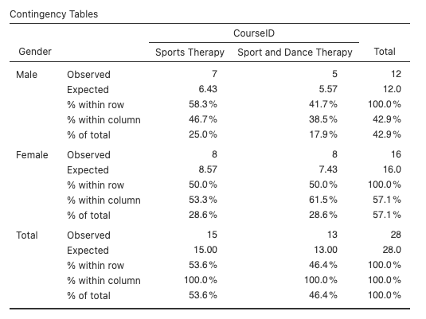

3 Kruistabellen en Chi-kwadraattest
Tot nu toe hebben we vooral gekeken naar beschrijvende statistieken van continue variabelen (bijvoorbeeld een getal, zoals lichaamsgewicht). Soms willen we echter categorische variabelen beschrijven en voorspellen, met andere woorden, we willen voorspellen in welke categorie een entiteit valt. We willen bijvoorbeeld voorspellen welke cursus een student volgt of of iemand roker is. In beide gevallen is er een binaire keuze: je volgt de cursus of niet, je rookt of niet. De Chi-kwadraattest onderzoekt dan of er een verband is tussen twee (of meer) categorische variabelen, met de hypotheses:
- HO: er is geen verband (of relatie) tussen de onderzochte categorische variabelen.
- H1: er is een verband (of relatie) tussen de onderzochte categorische variabelen.
Kennis - Identificeer en onthoud de basisprincipes van de Chi-Kwadraattoets, inclusief het doel en de toepassingen.
Toepassing - Pas de opgedane kennis toe om Chi-Kwadraattoetsen uit te voeren in Jamovi, gebruikmakend van de functies en tools van de software.
Analyse - Ontleed en analyseer de resultaten van Chi-Kwadraattoetsen, met focus op het begrijpen van de p-waarde en teststatistieken.
Toepassing - Demonstreer hoe data voorbereid en georganiseerd moet worden voor een Chi-Kwadraattoets in Jamovi, met aandacht voor het behandelen van categorische data.
Evaluatie - Beoordeel en evalueer kritisch de resultaten en voorwaarden van Chi-Kwadraattoetsen.
Creatie - Ontwikkel en implementeer nieuwe toepassingen of methoden voor het gebruik van Chi-Kwadraattoetsen in praktijksituaties, door te experimenteren met verschillende data-sets of onderzoeksomstandigheden.
3.1 Voorwaarden voor chi-kwadraat
Het mag duidelijk zijn dat we geen gebruik maken van parametrische aannames bij het uitvoeren van een chi-kwadraat toets. Categorische gegevens kunnen bijvoorbeeld niet normaal verdeeld zijn. Er zijn echter drie voorwaarden die bevestigd moeten worden.
- Gegevens op laag meetniveau: Zoals uit de inleiding kan worden verwacht, moeten je twee variabelen op ordinaal of nominaal niveau worden gemeten (d.w.z. categorische gegevens).
- Verwachte frequenties: In een kruistabel (contingency table, zie hieronder voor een voorbeeld), mag geen enkele verwachte waarde kleiner zijn dan 5. Dit zullen we later zien wanneer we verwachte frequenties uitwerken, maar in wezen is een verwachte frequentie hoeveel leden van een cel je zou verwachten te zien gezien de totale grootte van rijen en kolommen. Als een verwachte frequentie minder dan 5 is, moeten we rijen of kolommen groeperen (als dit mogelijk is) om de verwachte waarde te verhogen.
- Onafhankelijkheid: Elk item in de kruistabel binnen elk element kan maar in één element voorkomen. Bijvoorbeeld in de onderstaande tabel voor geslacht en cursus kan een student maar in 1 rij voor geslacht staan en in 1 kolom voor cursus.

Elke numerieke cel geeft het aantal studenten aan die in die bepaalde combinatie van geslacht en cursus vallen, bijvoorbeeld er zijn 3 vrouwelijke studenten die Sport and Dance Therapy volgen, maar er zijn 25 mannelijke studenten die Sport and Exercise Science volgen.
In deze modeule gaan we 4 voorbeelden van de chi-kwadraattest bekijken, waarbij we geleidelijk meer onderdelen van het chi-kwadraatproces inbouwen.
3.2 Pearson’s chi-kwadraattest
De Pearsons chi-kwadraattest wordt typisch gebruikt bij 2x2 kruistabellen. Bij deze test willen we gewoon in één jaargroep van studenten zien of er iets ‘vreemds’ is in onze gegevens, of dat er een verband is tussen onze categorieën variabelen. We verwachten dat er een 50/50 verdeling van studenten tussen elke cursus is, en binnen elke cursus is er een 50/50 verdeling van mannen en vrouwen.
Open CourseAttendee.omv en de gegevens zien er als volgt uit:

In dit voorbeeld hebben we momenteel slechts twee cursussen en twee geslachten. Het bestand zal het mogelijk maken om meer cursussen toe te voegen wanneer studenten zich beginnen in te schrijven.
Voor een eenvoudige manier om vraag 3 hierboven te beantwoorden, kunnen we Jamovi een contingentietabel voor ons laten maken, vergelijkbaar met de tabel die we hierboven zagen bij het bespreken van aannames.
Klik op Analyses, dan Frequencies, dan Independent Samples.

Het symbool χ onder de tekst ‘Independent Samples’ is de Griekse letter chi, dus χ2 is gewoon een korte manier om ‘chi-kwadraat’ te zeggen.
In het menu dat verschijnt, sleep je Gender naar Rows en CourseID naar Columns.

Zo eenvoudig is het om onze contingentietabel in de resultaten te zien - met de genderlabels Maele en Female als rijen en de cursus-ID’s als kolommen. De getallen in elke cel vertellen ons dus hoeveel gevallen er in elke combinatie van geslacht en cursusID-groep zitten.

We kunnen nu ons antwoord op vraag 3 bevestigen - er zijn 7 mannen in Sports Therapy en 5 in Sport and Dance Therapy, en 8 vrouwen in Sports Therapy en 8 in Sport and Dance Therapy.
Dit is een 2x2 contingentietabel, omdat er twee niveaus zijn voor elke categorie. Dit is waarschijnlijk de meest voorkomende en de eenvoudigste om te interpreteren, maar je kunt ook contingentietabellen hebben met meer niveaus in een categorie, zoals we in het eerste voorbeeld hebben gezien.
Je kunt ook de totalen zien voor elke rij en kolom aan de zijkanten en onderin de tabel, en het totaal van onze totale gegevens in de rechterbenedenhoek. Onze gegevens bevatten in totaal 12 mannen en 16 vrouwen, 15 studenten Sports Therapy en 13 studenten Sport and Dance Therapy, en onze gegevens omvatten in totaal 28 studenten.
Waar we nu in geïnteresseerd zijn, is of er iets afwijkend is met betrekking tot het aantal studenten in elk van de cellen van de contingentietabel. Is er een specifiek verband tussen cursus en geslacht?
Als bijvoorbeeld 50% van de cursus Sports Therapy man was en 52% van de cursus Sports and Dance Therapy man, dan zouden we zeggen dat de inschrijvingen voor de cursussen vergelijkbaar zijn voor mannen en vrouwen. Maar wat gebeurt er als slechts 10% van de deelnemers aan Sports and Dance Therapy man is? Kunnen we dan zeggen dat de geslachtsverdeling per cursus significant anders is?
Laten we nog eens naar onze tabel kijken. Het lijkt erop dat er meer vrouwen dan mannen in de cursus Sports and Dance Therapy zitten, maar is het een statistisch significant verschil?
Het beantwoorden van deze vraag is het doel van de chi-kwadraat test.
Q4. Hoe zou je de nulhypothese en alternatieve hypothese formuleren voor deze gegevens?
Laten we, voordat we de test uitvoeren, wat meer informatie in onze kruistabel zetten. Klik op het menu Cells in het instellingenmenu voor de contingentietabel en vink elk beschikbaar selectievakje aan.

We hebben nu heel wat aan onze tabel toegevoegd:

Laten we dit eens doornemen:
- Observed (waargenomen): de feitelijke gegevens die we hebben verzameld, dit is het aantal studenten waarvan we weten dat ze in elke cel zitten (cursus/geslacht).
- Expected (verwacht): dit is het aantal dat we verwachten in elke cel te hebben als de aantallen gelijk verdeeld waren. We berekenen dit als volgt: het verwachte aantal mannelijke sporttherapeuten = (totaal Sports Therapy * totaal mannen) / (totaal studenten) = (15*12)/28 = 6,4, d.w.z. in deze steekproef zouden we verwachten dat er 6,4 mannelijke studenten sporttherapie zouden studeren. Zo controleren we ook onze voorwaarde over de verwachte frequentie.
- Rij-, kolom- en totaalpercentages: het is vaak gemakkelijker om percentages te bekijken dan werkelijke frequenties. Dit kan vaak helpen bij het vergelijken van verschillende steekproeven of categorieën.
Je kunt deze extra getallen aan- en uitzetten als dat nodig is - als je bijvoorbeeld meer geïnteresseerd bent in de geslachtsverdeling dan in de cursusverdeling, kun je alleen percentages voor rijen aanzetten zodat je je daarop kunt richten.
Uit de kruistabel:
Q5. Hoeveel vrouwelijke studenten studeren Sports Therapy?
Q6. Hoeveel vrouwelijke studenten zouden we verwacht hebben die Sports Therapy studeren?
Q7. Welk percentage van de totale steekproef bestond uit mannen die Sport- and Dans Therapy studeerden?
Q8. Welk percentage van de cursus Sports Therapy was vrouwelijk?
Laten we tenslotte eens kijken naar de resultaten van onze chi-kwadraattest. Schakel in het vervolgkeuzemenu Statistics het selectievakje in voor χ2 en zorg ervoor dat het selectievakje Hypothese naast ‘Group 1 ≠ Group 2’ staat.
Het vakje was waarschijnlijk al aangevinkt toen je het menu opende, maar controleer het nog een keer!
Je zou de tabel met testresultaten moeten zien verschijnen in de resultatenviewer.

We krijgen nu de teststatistieken (0,19, de eigenlijke chi-kwadraatwaarde), de vrijheidsgraden (df, berekend als [aantal rijen - 1] x [aantal kolommen - 1], dus in ons geval hier, 1 x 1 = 1), en de 2-zijdige p waarde (0,662).
De Chi-kwadraattest onderzoekt of er een verband is tussen de twee categorische variabelen geslacht en cursus. Als de significantiewaarde klein genoeg is, d.w.z. kleiner dan onze gebruikelijke alpha van 0,05, dan verwerpen we de nulhypothese dat de variabelen onafhankelijk zijn en hebben we enig vertrouwen dat de waarden op de een of andere manier samenhangen.
Hier zien we dat de p waarde groter is dan 0,05, dus we accepteren de nulhypothese dat er geen interactie / associatie / relatie (je kunt er op verschillende manieren naar verwijzen, maar ze betekenen hetzelfde) is tussen cursus en geslacht. Dat wil zeggen dat de verhouding Male en Female per cursus niet significant verschilt van de verhouding Male en Female van de totale steekproef.
3.3 Chi-kwadraat verder analyseren
Laad nu het bestand CourseAttendeeGenderBias.omv. Zoals de naam al doet vermoeden, zijn de gegevens aangepast zodat het lijkt alsof er een verschil is.
Voer dezelfde Chi-kwadraat analyse opnieuw uit en beantwoord de volgende vragen:
Q9. Hoeveel deelnemers zijn er in totaal in deze dataset? (maak eerst een frequentietabel !)
Q10. Hoeveel deelnemers zijn er opgenomen in de Chi-kwadraatanalyse?
Q11. Hoeveel mannen zitten er in de Chi-kwadraatanalyse?
Q12. Hoeveel geobserveerde mannen zijn er in de cursus Sports Therapy en hoeveel verwachte?
Q13. Wat is de berekening voor de verwachte vrouwen in Sport and Dans Therapy?
Tot slot moeten we de resultaten van de Chi-kwadraattoets kunnen rapporteren. We zien dat de test significant is, dus kijken we ook naar de waarden binnen de cellen voor elke groep en trekken enkele conclusies over wat de getallen betekenen. Voor deze test kunnen we schrijven:
Er was een significant verband tussen het type cursus en het geslacht, χ2(1) = 3,89, p = 0,049. Geslacht lijkt te bepalen voor welke cursus een student zich inschrijft. Mannen schrijven zich vaker in voor Sports Therapy en vrouwen voor Sport and Dans Therapy.
3.3.1 Effectgrootte
De effectgrootte berekenen van een χ2 is eenvoudig. In het Statistics menu, onder Nominal, vink je simpelweg Phi en Cramer’s V aan. Deze zouden nu in onze resultatenviewer moeten verschijnen.


Deze getallen kunnen worden gelezen als variërend tussen 0 (geen associatie tussen variabelen) en 1 (perfecte associatie). Meestal wordt Cramer’s V gebruikt, omdat Phi door een vreemde berekening feitelijk groter dan 1 kan zijn als je kruistabellen hebt die groter zijn dan 2x2, en Cramer’s V past dit gewoon aan zodat deze altijd tussen 0 en 1 valt. In dit geval, omdat onze tabel 2x2 is, zijn ze hetzelfde.
3.3.2 Odds ratio
Een andere manier om te zien hoe de groepen zich tot elkaar verhouden is door te kijken naar de odds ratio. Dit is alleen mogelijk voor 2x2 kruistabellen.
De odds ratio is een kansverhouding die ons vertelt hoe groot de kans is dat een enkele deelnemer uit een van beide rijen-groepen in de eerste kolom-groep zit. Dat klinkt misschien een beetje verwarrend, dus laten we het even doornemen. Eerst vink je in het menu Statistics onder Comparative Measures (2x2 only) het selectievakje Odds Ratio aan en verwijder je het vinkje bij Confidence intervals als dit is geselecteerd om het duidelijker te maken. De oddsratiotabel verschijnt onder onze χ2 tabel in de resultaten.


De odds ratio wordt berekend als de kans dat iemand uit de ene groep van de ene categorie (geslacht) in een bepaalde groep van de andere categorie (cursus) zit. De kansverhouding wordt als volgt berekend, afhankelijk van hoe de gegevens in de kruistabel zijn ingedeeld:

Odds ratio = ( A x D ) / ( C x B )
Door deze berekening wordt cel A - Male en Sports Therapy - de belangrijkste cel waarmee we vergelijken. We kunnen onze oddsratio van 4,4 dus lezen als: “mannen hadden 4,4 keer zoveel kans als vrouwen om de cursus Sports Therapy te kiezen in plaats van Sport and Dans Therapy”.
Dit kan op het eerste gezicht vreemd lijken, want als we kijken naar onze ruwe waargenomen cijfers is ‘10 mannen ingeschreven in Sports Therapy’ niet 4 keer zo groot als ‘5 mannelijke Sport and Dans Therapu cursisten’. Maar dit komt omdat de odds ratio geen directe vergelijking is van onze cijfers op deze manier. Odds kunnen zeker een beetje verwarrend zijn, maar in het kort wordt de odds ratio gedefinieerd als:
De verhouding van de kans op A in de aanwezigheid van B en de kans op A in de afwezigheid van B. Twee gebeurtenissen zijn onafhankelijk als de odds ratio gelijk is aan 1, dat wil zeggen dat de kans op de ene gebeurtenis hetzelfde is in de aan- of afwezigheid van de andere gebeurtenis.
Daarom kan de odds ratio alleen worden berekend in een 2x2 tabel, omdat we technisch gezien de verhouding berekenen tussen de kans om Male te zijn en in de cursus Sports Therapy te zitten, en de kans om Male te zijn en niet in de cursus Sports Therapy te zitten. Omdat er voor elke variabele maar één andere groep is, kunnen we deze niet groepen interpreteren als ‘vrouwelijk’ in de cursus ‘Sport and Dans Therapy’.
We kunnen onze odds ratio omdraaien door de inverse ervan te nemen, door te berekenen:
1 / Odds Ratio
Wat in dit geval is:
1 / 4.4 = 0.23
Wat kan worden gelezen als: “vrouwen hadden 0,23 keer de kans om Sports Therapy te kiezen dan mannen.” Aangezien dit getal kleiner is dan 1, kunnen we zien dat dit betekent dat ze minder kans hadden om Sports Therapy te kiezen dan mannen.
Het is daarom belangrijk om je gegevens zo in te stellen dat ze antwoord geven op de specifieke vraag die je in gedachten hebt voor de berekening van de kansverhouding - je zou bijvoorbeeld de labels van de geslachtsgegevens zo kunnen verwisselen dat Female de eerste rij wordt waarmee wordt vergeleken. In dat geval zou ons resultaat van de kansverhouding in Jamovi direct naar het bovenstaande resultaat van 0,23 springen en zouden we de inverse moeten nemen om ons oorspronkelijke antwoord van 4,4 te krijgen.
Je ziet misschien de ‘log odds ratio’ in de opties van het statistiekmenu. Dit is vergelijkbaar met de kansverhouding, maar dan gestandaardiseerd. Dit kan handig zijn als je kansen vergelijkt tussen gegevensverzamelingen van verschillende grootte.
3.4 Meer dan 2x2 contingentietabellen
We herhalen ten slotte de bovenstaande stappen, maar gebruiken CourseAttendeeAllYearsGenderBias.omv. Negeer het feit dat er 3 jaar gegevens zijn in dit bestand, analyseer gewoon het totale aantal mannen en vrouwen verdeeld over de reeks cursussen in het bestand. Dit is iets ingewikkelder omdat er 4 cursussen zijn, maar gebruik dezelfde stappen om de onderstaande vragen te beantwoorden.
Q14. Hoeveel gevallen staan er in het gegevensbestand en hoeveel worden er opgenomen in de contingentietabel?
Q15. Zijn er ‘ongeldige’ records die zijn uitgesloten van de analyse en wat zegt deze waarde over de gegevens?
Q16. Hoeveel mannen zijn er in de totale steekproef?
Q17. Hoeveel vrouwen werden geobserveerd in de cursus Sport and Exercise Science?
Q18. We hebben nu 4 cursussen in deze dataset en 168 gevallen in de steekproef. Wat is het verwachte aantal mannelijke studenten dat Sports Therapy volgt en het aantal vrouwelijke studenten dat Sport Psychology volgt? Laat de berekening hiervoor zien.
Q19. Wat zijn de vrijheidsgraden voor deze test?
Q20. Wat is de χ2-waarde voor deze test?
Q21. Wat is de p-waarde voor de test?
Q22. Schrijf een zin op om te laten zien hoe je deze χ2 test zou rapporteren.
Q23. Wat zijn de effectgroottes voor deze test?
Q24. Kunnen we een odds ratio berekenen voor deze gegevens?
3.5 Aantallen wegen
Een iets andere manier om frequentiegegevens te verwerken is door gebruik te maken van weight cases. Hier worden de waargenomen tellingen voor elke groep expliciet als gegevens ingevoerd, in plaats van alleen de rijen in ons gegevensbestand op te tellen.
Om te zien wat dit betekent, open je CourseAttendeeFrequencies.omv. Merk nu op dat onze kolommen CourseId en Gender slechts één item bevatten voor elke combinatie, waarbij de kolom Frequency ons nu vertelt hoeveel mensen er in die groep zitten.
Om gegevens die op deze manier zijn ingesteld in Jamovi te gebruiken, ga je naar het menu Independent Samples en stel je CourseID en Gender in de rijen- en kolommenvakken in zoals eerder, maar sleep je nu ook Frequency naar het vak Counts.

De resultatenviewer zou nu een vergelijkbare tabel moeten laten zien als eerder en zo kan je de rest van de analyse op dezelfde manier uitvoeren als hierboven.